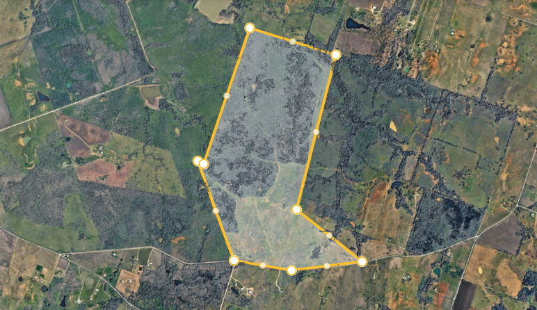

LAND-STAR LISTING
Thorndale 538± Acres
Residential & master-planned community potential

Property photoPROPERTY OVERVIEW
Two Surveyed Tracts | Paved CR 440 Frontage | Residential Development Potential
Marketing description
Approximately 538 contiguous acres on CR 440 near Thorndale offer scale for developers evaluating a phased residential community, a master-planned development or a strategic land hold in eastern Williamson County. The offering comprises two surveyed 269.007-acre tracts with paved CR 440 frontage.
Its position between the Taylor employment area and the Rockdale/Sandow Lakes corridor provides regional context for a residential development study. A buyer can evaluate multiple phases and product types while coordinating roads, drainage, open space and infrastructure within an overall plan. No specific lot yield or density is represented.
Seller materials report a water line along CR 440 and electric service through Bartlett Electric Cooperative. Service availability, development capacity, extensions, connection costs and timing require direct provider confirmation. A wastewater discharge-permit application has been reported filed; buyers should review the latest regulatory correspondence and engineering to establish its current status, authorized capacity if approved, conditions and required facilities. No final permit approval is represented in this listing.
Seller estimates limited rear floodplain; its extent and effect on usable acreage require independent verification. Review access, title, easements, soils, drainage, environmental constraints and applicable development requirements.
Contact LAND-STAR Real Estate for the surveys, available utility and wastewater materials, offering guidance and a property tour. Please share your target lot mix, infrastructure criteria and acquisition timeline so our team can coordinate a focused review.
Investment highlights
- Approximately 538 acres comprising two surveyed 269.007-acre tracts
- Paved CR 440 frontage in eastern Williamson County
- Phased residential, master-planned community or land-bank potential
- Water line and Bartlett Electric service reported; capacity unconfirmed
- Wastewater discharge-permit application reported filed; current status to be verified
- Survey, utilities and permitting materials available on request
PROPERTY MATERIALS
Marketing material & property documents
View the property marketing flyer below. Surveys, utility and wastewater information, and any additional planning materials can be requested from LAND-STAR; ask us to confirm current availability.
All acreage, property details, utility and permitting information are based on seller-provided materials and should be independently verified. Buyers should consult qualified professionals and relevant agencies before making decisions.